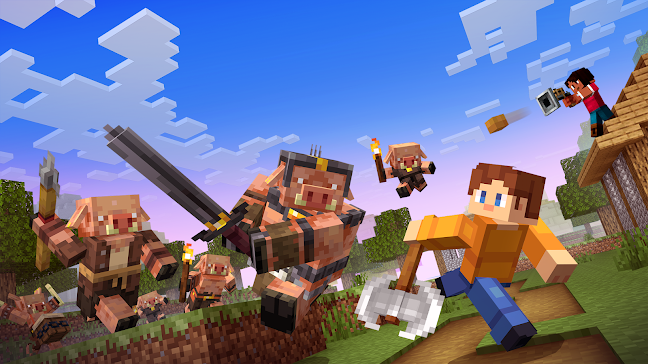

Question 3
How do you support collaboration within your team?
I work diligently and ensure collective harmony
I offer nurturing mentorship and steady support
I empower others with fun, quirky surprises
I persist through setbacks and keep moving forward
Back
Next